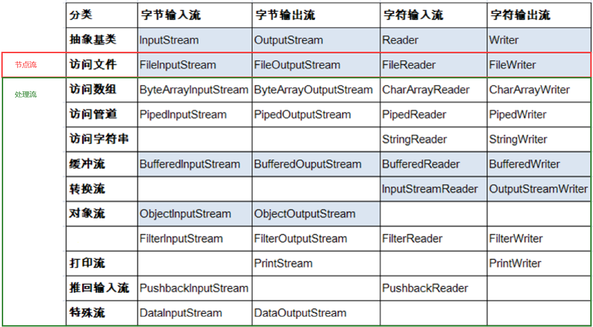

课程：宋红康 JAVA
File类的使用
概述：
- java.io.File类：文件和文件目录路径的抽象表示形式，与平台无关.
- File能新建、删除、重命名文件和目录，但File不能访问文件内容本身。如果需要访问文件内容本身，则需要使用输入/输出流。
- 想要在Java程序中表示一个真实存在的文件或目录，那么必须有一个File对象，但是Java程序中的一个File对象，可能没有一个真实存在的文件或目录。
- 后续File类的对象常会作为参数传递到流的构造器中，指明读取或写入的”终点”.
常用构造器
public File(String pathname)：以pathname为路径创建File对象，可以是绝对路径或者相对路径，如果pathname是相对路径，则默认的当前路径在系统属性user.dir中存储。- 绝对路径：是一个固定的路径,从盘符开始——相对于当前module
- 相对路径：是相对于某个位置开始
public File(String parent,String child)：以parent为父路径，child为子路径创建File对象。，public File(File parent, String child)：根据一个父File对象和子文件路径创建File对象
//这里只是创建对象，未必存储文件或者存在该目录
@Test
public void test1(){
//构造器1
File file1 = new File("hello.txt");//相对于当前module
File file2 = new File("D:\\IO\\he.txt");
System.out.println(file1);
System.out.println(file2);
//构造器2：
File file3 = new File("D:\\IO","he.txt");
System.out.println(file3);
//构造器3：
File file4 = new File(file3,"hi.txt");
System.out.println(file4);
}
路径分隔符
路径中的每级目录之间用一个路径分隔符隔开。
路径分隔符和系统有关:
- windows和DOS系统默认使用“\”来表示
- UNIX和URL使用“/“来表示
Java程序支持跨平台运行，因此路径分隔符要慎用。
为了解决这个隐患，File类提供 了一个常量：
public static final String separator——根据操作系统，动态的提供分隔符。
常用方法
File类的获取功能
public String getAbsolutePath()：获取绝对路径public String getPath()：获取路径public String getName()：获取名称public String getParent()：获取上层文件目录路径。若无，返回nullpublic long length()：获取文件长度（即：字节数）。不能获取目录的长度。public long lastModified()：获取最后一次的修改时间，毫秒值
如下的两个方法适用于文件目录：
public String[] list()：获取指定目录下的所有文件或者文件目录的名称数组public File[] listFiles()：获取指定目录下的所有文件或者文件目录的File数组
@Test
public void test2(){
File file1 = new File("hello.txt");
File file2 = new File("d:\\io\\hi.txt");
System.out.println(file1.getAbsolutePath());
System.out.println(file1.getPath());
System.out.println(file1.getName());
System.out.println(file1.getParent());
System.out.println(file1.length());
System.out.println(new Date(file1.lastModified()));
System.out.println();
System.out.println(file2.getAbsolutePath());
System.out.println(file2.getPath());
System.out.println(file2.getName());
System.out.println(file2.getParent());
System.out.println(file2.length());
System.out.println(file2.lastModified());
}


@Test
public void test3(){
File file = new File("d:\\io");
String[] list = file.list();
for(String s : list){
System.out.println(s);
}
System.out.println();
File[] files = file.listFiles();
for(File f : files){
System.out.println(f);
}
}
File类的重命名功能
public boolean renameTo(File dest)：把文件重命名为指定的文件路径
- 比如：
file1.renameTo(file2)为例：要想保证返回true,需要file1在硬盘中是存在的，且file2不能在硬盘中存在。
@Test
public void test4(){
File file1 = new File("hello.txt");
File file2 = new File("D:\\IO\\hi.txt");
boolean renameTo = file1.renameTo(file2);
System.out.println(renameTo);
}
File类的判断功能
public boolean isDirectory()：判断是否是文件目录
public boolean isFile() ：判断是否是文件
public boolean exists() ：判断是否存在
public boolean canRead() ：判断是否可读
public boolean canWrite() ：判断是否可写
public boolean isHidden() ：判断是否隐藏
File类的创建功能
public boolean createNewFile() ：创建文件。若文件存在，则不创建，返回false
public boolean mkdir() ：创建文件目录。如果此文件目录存在，就不创建了。如果此文件目录的上层目录不存在，也不创建。
public boolean mkdirs()：创建文件目录。如果此文件目录存在，就不创建了。如果上层文件目录不存在，一并创建
注意事项：如果你创建文件或者文件目录没有写盘符路径，那么，默认在项目路径下。
File类的删除功能
public boolean delete()：删除文件或者文件夹
删除注意事项
- Java中的删除不走回收站
- 要删除一个文件目录，请注意该文件目录内不能包含文件或者文件目录
IO流原理及流的分类
Java IO原理
I/O是Input/Output的缩写，I/O技术是非常实用的技术，用于处理设备之间的数据传输。如读/写文件，网络通讯等。
Java程序中，对于数据的输入/输出操作以“流(stream)”的方式进行。
java.io包下提供了各种“流”类和接口，用以获取不同种类的数据，并通过标准的方法输入或输出数据。
输入与输出
输入input：读取外部数据(磁盘、光盘等存储设备的数据)到程序(内存)中。
输出output：将程序( 内存)数据输出到磁盘、光盘等存储设备中。
输入与输出都是站在程序的角度上看的
流的分类
按操作数据单位不同分为:字节流(8 bit)， 字符流(16 bit)
按数据流的流向不同分为:输入流，输出流
按流的角色的不同分为:节点流，处理流
节点流：可以从或向一个特定的地方（节点）读写数据—>操作数据
处理流：是对一个已存在的流进行连接和封装，通过所封装的流的功能调用实现数据读写。—>处理流
IO流体系
Java的IO流共涉及40多个类，实际上非常规则，都是从如下4个抽象基类派生的。
由这四个类派生出来的子类名称都是以其父类名作为子类名后缀。

一些通用方法
InputStream
int read()：从输入流中读取数据的下一个字节。返回0到255范围内的int字节值。如果因为已经到达流末尾而没有可用的字节，则返回值-1。
int read(byte[] b)：从此输入流中将最多b.length个字节的数据读入一个byte 数组中。如果因为已经到达流末尾而没有可用的字节，则返回值-1。否则以整数形式返回实际读取的字节数。
int read(byte[] b, int off,int len)：将输入流中最多len个数据字节读入byte 数组。尝试读取len个字节，但读取的字节也可能小于该值。以整数形式返回实际读取的字节数。如果因为流位于文件末尾而没有可用的字节，则返回值-1。
public void close() throws IOException：关闭此输入流并释放与该流关联的所有系统资源。
Reader
int read()：读取单个字符。作为整数读取的字符，范围在0到65535之间(0x00-0ffff) (2 个字节的Unicode码)，如果已到达流的末尾，则返回-1
int read(char[] cbuf)：将字符读入数组。如果已到达流的末尾，则返回-1。否则返回本次读取的字符数。
int read(char[] cbuf,int off,int len)：将字符读入数组的某一部分。存到数组cbuf中，从off处开始存储，最多读len个字符。如果已到达流的末尾，则返回-1。否则返回本次读取的字符数。
public void close() throws IOException：关闭此输入流并释放与该流关联的所有系统资源。
OutputStream
void write(int b)：将指定的字节写入此输出流。write 的常规协定是：向输出流写入一个字节。要写入的字节是参数b的八个低位。b的24个高位将被忽略。即写 入0~255范围的。
void write(byte[] b)：将b.length个字节从指定的byte数组写入此输出流。write(b) 的常规协定是:应该与调用write(b,0,b.length)的效果完全相同。
void write(byte[] b,int off,int len)：将指定byte数组中从偏移量off开始的len个字节写入此输出流。
public void flush()throws IOException：刷新此输出流并强制写出所有缓冲的输出字节，调用此方法指示应将这些字节立即写入它们预期的目标。
public void close() throws IOException：关闭此输出流并释放与该流关联的所有系统资源。
Writer
void write(int c)：写入单个字符。要写入的字符包含在给定整数值的16个低位中，16高位被忽略。即写入0到65535之间的Unicode码。
void write(char[] cbuf)：写入字符数组。
void write(char[] cbuf,int off,int len)：写入字符数组的某一部分。从off开始， 写入len个字符
void write(String str)：写入字符串。
void write(String str,int off,int len)：写入字符串的某一-部分。
void flush()：刷新该流的缓冲，则立即将它们写入预期目标。
public void close() throws IOException：关闭此输出流并释放与该流关联的所有系统资源。
节点流(或文件流)
FileReader
@Test
public void testFileReader(){
FileReader fr = null;
try {
//1.实例化File类的对象，指明要操作的文件
File file = new File("hello.txt");//相较于当前Module
//2.提供具体的流
fr = new FileReader(file);
//3.数据的读入
//read():返回读入的一个字符。如果达到文件末尾，返回-1。
//方式一：
// int data = fr.read();
// while(data != -1){
// System.out.print((char)data);
// data = fr.read();
// }
//方式二：语法上针对于方式一的修改
int data;
while((data = fr.read()) != -1){
System.out.print((char)data);
}
} catch (IOException e) {
e.printStackTrace();
} finally {
//4.流的关闭操作
// try {
// if(fr != null)
// fr.close();
// } catch (IOException e) {
// e.printStackTrace();
// }
//或
if(fr != null){
try {
fr.close();
} catch (IOException e) {
e.printStackTrace();
}
}
}
}
@Test
public void testFileReader1() {
FileReader fr = null;
try {
//1.File类的实例化
File file = new File("hello.txt");
//2.FileReader流的实例化
fr = new FileReader(file);
//3.读入的操作
//read(char[] cbuf):返回每次读入cbuf数组中的字符的个数。如果达到文件末尾，返回-1
char[] cbuf = new char[5];
int len;
while((len = fr.read(cbuf)) != -1){
//方式一：
//错误的写法
// for(int i = 0;i < cbuf.length;i++){
// System.out.print(cbuf[i]);
// }
//正确的写法
// for(int i = 0;i < len;i++){
// System.out.print(cbuf[i]);
// }
//方式二：
//错误的写法,对应着方式一的错误的写法
// String str = new String(cbuf);
// System.out.print(str);
//正确的写法
String str = new String(cbuf,0,len);
System.out.print(str);
}
} catch (IOException e) {
e.printStackTrace();
} finally {
if(fr != null){
//4.资源的关闭
try {
fr.close();
} catch (IOException e) {
e.printStackTrace();
}
}
}
}
1-【为什么for(int i = 0;i < cbuf.length;i++)和String str = new String(cbuf)是错的写法】
1-假设**”hello.txt”**里面的内容为：helloworld123
2-那么我们在批量读取的时候是这么操作的：第一次读取5个字符 [h e l l o ]，返回的len为5 —> 第二次读取5个字符 [w o r l d]，替换char[]cbuf数组里面的5个字符，同时返回值为5 —>第三次只能读到3个字符[1 2 3]，替换char[] cbuf数组里面的3个字符，最终的char[] cbuf数组为 [1 2 3 l d]，同时值为3 —> 第四次读的时候已经没有字符了，返回值为-1
3-因此最终读取的内容为：helloworld123ld
2-read()的理解：返回读入的一个字符。如果达到文件末尾，返回-1
3-异常的处理：为了保证流资源一定可以执行关闭操作。需要使用try-catch-finally处理
4-读入的文件一定要存在，否则就会报FileNotFoundException。
FileWriter
@Test
public void testFileWriter() {
FileWriter fw = null;
try {
//1.提供File类的对象，指明写出到的文件
File file = new File("hello.txt");
//2.提供FileWriter的对象，用于数据的写出
fw = new FileWriter(file,true);
//3.写出的操作
fw.write("I have a dream!\n");
fw.write("you need to have a dream!");
} catch (IOException e) {
e.printStackTrace();
} finally {
//4.流资源的关闭
if(fw != null){
try {
fw.close();
} catch (IOException e) {
e.printStackTrace();
}
}
}
}
@Test
public void testFileReaderFileWriter() {
FileReader fr = null;
FileWriter fw = null;
try {
//1.创建File类的对象，指明读入和写出的文件
File srcFile = new File("hello.txt");
File destFile = new File("hello2.txt");
//不能使用字符流来处理图片等字节数据
// File srcFile = new File("爱情与友情.jpg");
// File destFile = new File("爱情与友情1.jpg");
//2.创建输入流和输出流的对象
fr = new FileReader(srcFile);
fw = new FileWriter(destFile);
//3.数据的读入和写出操作
char[] cbuf = new char[5];
int len;//记录每次读入到cbuf数组中的字符的个数
while((len = fr.read(cbuf)) != -1){
//每次写出len个字符
fw.write(cbuf,0,len);
}
} catch (IOException e) {
e.printStackTrace();
} finally {
//4.关闭流资源
try {
if(fw != null)
fw.close();
} catch (IOException e) {
e.printStackTrace();
}
try {
if(fr != null)
fr.close();
} catch (IOException e) {
e.printStackTrace();
}
}
}
1-输出操作，对应的File可以不存在的。并不会报异常
2-File对应的硬盘中的文件如果不存在，在输出的过程中，会自动创建此文件。
3-File对应的硬盘中的文件如果存在：
- 3-1-如果流使用的构造器是：
FileWriter(file,false)/FileWriter(file)：对原有文件的覆盖 - 3-2-如果流使用的构造器是：
FileWriter(file,true)：不会对原有文件覆盖，而是在原有文件基础上追加内容
FileInputStream和FileOutputStream
//使用字节流FileInputStream处理文本文件，可能出现乱码。
@Test
public void testFileInputStream() {
FileInputStream fis = null;
try {
//1. 造文件
File file = new File("hello.txt");
//2.造流
fis = new FileInputStream(file);
//3.读数据
byte[] buffer = new byte[5];
int len;//记录每次读取的字节的个数
while((len = fis.read(buffer)) != -1){
String str = new String(buffer,0,len);
System.out.print(str);
}
} catch (IOException e) {
e.printStackTrace();
} finally {
if(fis != null){
//4.关闭资源
try {
fis.close();
} catch (IOException e) {
e.printStackTrace();
}
}
}
}
为什么使用字节流处理文本文件会出现乱码？
1-因为字节流传送数据用的是byte[]buffer，是字节数组。对于英文字母来说，都是一个字母占一个字节，所以其实输入输出都没问题
2-但是对于中文字符，在UTF-8 编码中一个中文字符占3个字节，在Unicode 编码中一个中文字符占两个字节
3-我们是每运5个字节处理一次（比如打印），这样就会乱码
/*
实现对图片的复制操作
*/
@Test
public void testFileInputOutputStream() {
FileInputStream fis = null;
FileOutputStream fos = null;
try {
//
File srcFile = new File("爱情与友情.jpg");
File destFile = new File("爱情与友情1.jpg");
//
fis = new FileInputStream(srcFile);
fos = new FileOutputStream(destFile);
//复制的过程
byte[] buffer = new byte[5];
int len;
while((len = fis.read(buffer)) != -1){
fos.write(buffer,0,len);
}
} catch (IOException e) {
e.printStackTrace();
} finally {
if(fos != null){
//
try {
fos.close();
} catch (IOException e) {
e.printStackTrace();
}
}
if(fis != null){
try {
fis.close();
} catch (IOException e) {
e.printStackTrace();
}
}
}
}
//指定路径下文件的复制
public void copyFile(String srcPath,String destPath){
FileInputStream fis = null;
FileOutputStream fos = null;
try {
File srcFile = new File(srcPath);
File destFile = new File(destPath);
fis = new FileInputStream(srcFile);
fos = new FileOutputStream(destFile);
//复制的过程
byte[] buffer = new byte[1024];
int len;
while((len = fis.read(buffer)) != -1){
fos.write(buffer,0,len);
}
} catch (IOException e) {
e.printStackTrace();
} finally {
if(fos != null){
//
try {
fos.close();
} catch (IOException e) {
e.printStackTrace();
}
}
if(fis != null){
try {
fis.close();
} catch (IOException e) {
e.printStackTrace();
}
}
}
}
@Test
public void testCopyFile(){
long start = System.currentTimeMillis();
String srcPath = "C:\\Users\\Administrator\\Desktop\\01-视频.avi";
String destPath = "C:\\Users\\Administrator\\Desktop\\02-视频.avi";
// String srcPath = "hello.txt";
// String destPath = "hello3.txt";
copyFile(srcPath,destPath);
long end = System.currentTimeMillis();
System.out.println("复制操作花费的时间为：" + (end - start));//618
}
为什么我们使用字节流复制文本文件就不会出问题呢？：因为我们没有处理字节，只是5个一次搬运字节，最后打开，所以最后不会出现乱码
对于文本文件(.txt,.java,.c,.cpp)，使用字符流处理
对于非文本文件(.jpg,.mp3,.mp4,.avi,.doc,.ppt,…)，使用字节流处理
缓冲流
BufferedInputStream和BufferedOutputStream
@Test
public void BufferedStreamTest() throws FileNotFoundException {
BufferedInputStream bis = null;
BufferedOutputStream bos = null;
try {
//1.造文件
File srcFile = new File("爱情与友情.jpg");
File destFile = new File("爱情与友情3.jpg");
//2.造流
//2.1 造节点流
FileInputStream fis = new FileInputStream((srcFile));
FileOutputStream fos = new FileOutputStream(destFile);
//2.2 造缓冲流 ———— 处理流
bis = new BufferedInputStream(fis);
bos = new BufferedOutputStream(fos);
//3.复制的细节：读取、写入
byte[] buffer = new byte[10];
int len;
while((len = bis.read(buffer)) != -1){
bos.write(buffer,0,len);
// bos.flush();//刷新缓冲区
}
} catch (IOException e) {
e.printStackTrace();
} finally {
//4.资源关闭
//要求：先关闭外层的流，再关闭内层的流
if(bos != null){
try {
bos.close();
} catch (IOException e) {
e.printStackTrace();
}
}
if(bis != null){
try {
bis.close();
} catch (IOException e) {
e.printStackTrace();
}
}
//说明：关闭外层流的同时，内层流也会自动的进行关闭。关于内层流的关闭，我们可以省略.
// fos.close();
// fis.close();
}
}
//实现文件复制的方法
public void copyFileWithBuffered(String srcPath,String destPath){
BufferedInputStream bis = null;
BufferedOutputStream bos = null;
try {
//1.造文件
File srcFile = new File(srcPath);
File destFile = new File(destPath);
//2.造流
//2.1 造节点流
FileInputStream fis = new FileInputStream((srcFile));
FileOutputStream fos = new FileOutputStream(destFile);
//2.2 造缓冲流
bis = new BufferedInputStream(fis);
bos = new BufferedOutputStream(fos);
//3.复制的细节：读取、写入
byte[] buffer = new byte[1024];
int len;
while((len = bis.read(buffer)) != -1){
bos.write(buffer,0,len);
}
} catch (IOException e) {
e.printStackTrace();
} finally {
//4.资源关闭
//要求：先关闭外层的流，再关闭内层的流
if(bos != null){
try {
bos.close();
} catch (IOException e) {
e.printStackTrace();
}
}
if(bis != null){
try {
bis.close();
} catch (IOException e) {
e.printStackTrace();
}
}
//说明：关闭外层流的同时，内层流也会自动的进行关闭。关于内层流的关闭，我们可以省略.
// fos.close();
// fis.close();
}
}
@Test
public void testCopyFileWithBuffered(){
long start = System.currentTimeMillis();
String srcPath = "C:\\Users\\Administrator\\Desktop\\01-视频.avi";
String destPath = "C:\\Users\\Administrator\\Desktop\\03-视频.avi";
copyFileWithBuffered(srcPath,destPath);
long end = System.currentTimeMillis();
System.out.println("复制操作花费的时间为：" + (end - start));//618 - 176
}
BufferedReader和BufferedWriter
@Test
public void testBufferedReaderBufferedWriter(){
BufferedReader br = null;
BufferedWriter bw = null;
try {
//创建文件和相应的流
br = new BufferedReader(new FileReader(new File("dbcp.txt")));
bw = new BufferedWriter(new FileWriter(new File("dbcp1.txt")));
//读写操作
//方式一：使用char[]数组
// char[] cbuf = new char[1024];
// int len;
// while((len = br.read(cbuf)) != -1){
// bw.write(cbuf,0,len);
// // bw.flush();
// }
//方式二：使用String
String data;
while((data = br.readLine()) != null){
//方法一：
// bw.write(data + "\n");//data中不包含换行符
//方法二：
bw.write(data);//data中不包含换行符
bw.newLine();//提供换行的操作
}
} catch (IOException e) {
e.printStackTrace();
} finally {
//关闭资源
if(bw != null){
try {
bw.close();
} catch (IOException e) {
e.printStackTrace();
}
}
if(br != null){
try {
br.close();
} catch (IOException e) {
e.printStackTrace();
}
}
}
}
缓存流的作用：提高读写速度——原因：内部提供了一个缓冲区
BufferedInputStream和BufferedOutputStream的源码片段：
private static int DEFAULT_BUFFER_SIZE = 8192;
public BufferedInputStream(InputStream in) {
this(in, DEFAULT_BUFFER_SIZE);
}
public BufferedInputStream(InputStream in, int size) {
super(in);
if (size <= 0) {
throw new IllegalArgumentException("Buffer size <= 0");
}
buf = new byte[size];
}
BufferedReader和BufferedWriter的源码片段：
private static int defaultCharBufferSize = 8192;
public BufferedReader(Reader in) {
this(in, defaultCharBufferSize);
}
public BufferedReader(Reader in, int sz) {
super(in);
if (sz <= 0)
throw new IllegalArgumentException("Buffer size <= 0");
this.in = in;
cb = new char[sz];
nextChar = nChars = 0;
}
1-当读取数据时，数据按块读入缓冲区，其后的读操作则直接访问缓冲区
2-当使用BufferedInputStream读取字节文件时，BufferedInputStream会 **一次性从文件中读取8192个(8Kb)**，存在缓冲区中，直到缓冲区装满了，才重新从文件中读取下一个8192个字节数组。
3-向流中写入字节时，不会直接写到文件，先写到缓冲区中直到缓冲区写满，BufferedOutputStream才会把缓冲区中的数据一次性写到文件里。使用方法flush()可以强制将缓冲区的内容全部写入输出流。
4-关闭流的顺序和打开流的顺序相反。只要关闭最外层流即可，关闭最外层流也会相应关闭内层节点流
5-flush()方法的使用：手动将buffer中内容写入文件
6-如果是带缓冲区的流对象的close()方法，不但会关闭流，还会在关闭流之前刷新缓冲区，关闭后不能再写出。
转换流
InputStreamReader与OutputStreamWriter：字符流
@Test
public void test1() throws IOException {
FileInputStream fis = new FileInputStream("dbcp.txt");
//InputStreamReader isr = new InputStreamReader(fis);//使用系统默认的字符集
//参数2指明了字符集，具体使用哪个字符集，取决于文件dbcp.txt保存时使用的字符集
InputStreamReader isr =
new InputStreamReader(fis,"UTF-8");//使用系统（idea）默认的字符集
char[] cbuf = new char[20];
int len;
while((len = isr.read(cbuf)) != -1){
String str = new String(cbuf,0,len);
System.out.print(str);//结果是没有出现乱码
}
isr.close();
}
使用FileInputStream读取文本文件 —> 在字节流的基础上使用InputStreamReader转换成字符流 —>使用字符流处理文件（打印文件内容到控制台）
@Test
public void test2() throws Exception {
//1.造文件、造流
File file1 = new File("dbcp.txt");
File file2 = new File("dbcp_gbk.txt");
FileInputStream fis = new FileInputStream(file1);
FileOutputStream fos = new FileOutputStream(file2);
InputStreamReader isr = new InputStreamReader(fis,"utf-8");
OutputStreamWriter osw = new OutputStreamWriter(fos,"gbk");
//2.读写过程
char[] cbuf = new char[20];
int len;
while((len = isr.read(cbuf)) != -1){
osw.write(cbuf,0,len);
}
//3.关闭资源
isr.close();
osw.close();
}
字符编码
编码表的由来
计算机只能识别二进制数据，早期由来是电信号。为了方便应用计算机，让它可以识别各个国家的文字。就将各个国家的文字用数字来表示，并一一对应，形成一张表。这就是编码表。
常见的编码表.
ASCII：美国标准信息交换码。用一个字节的7位可以表示。
IS08859-1: 拉丁码表。欧洲码表。用一个字节的8位表示。
GB2312：中国的中文编码表。最多两个字节编码所有字符。
GBK：中国的中文编码表升级，融合了更多的中文文字符号。最多两个字节编码
Unicode：国际标准码，融合了目前人类使用的所有字符。为每个字符分配唯一的字符码。所有的文字都用两个字节来表示。
UTF-8：变长的编码方式，可用1-4个字节来表示一个字符。
Unicode的问题
Unicode不完美，这里就有三个问题：
- 一个是，我们已经知道，英文字母只用一个字节表示就够了，
- 第二个问题是如何才能区别Unicode和ASCII？计算机怎么知道两个字节表示一个符号，而不是分别表示两个符号呢?
- 第三个，如果和GBK等双字节编码方式一样，用最高位是1或0表示两个字节和一个字节，就少了很多值无法用于表示字符，不够表示所有字符。
Unicode在很 长一段时间内无法推广，直到互联网的出现。
UTF
面向传输的众多 UTF ( UCS Transfer Format)标准出现了，顾名思义，UTF-8就是每次8个位传输数据，而UTF-16就是每次16个位。这是为传输而设计的编码，并使编码无国界，这样就可以显示全世界上所有文化的字符了。
字符集与编码
标准输入、输出流(了解)
System.in和System.out分别代表了系统标准的输入和输出设备
默认输入设备是:键盘，输出设备是:显示器
System.in的类型是InputStream：
public final static InputStream in = null;public final static InputStream in = null;
public final static PrintStream out = null;
System类的setIn(InputStream is) / setOut(PrintStream ps)方式重新指定输入和输出的流。
public static void setln(InputStream in)public static void setOut(PrintStream out)
/**练习：
从键盘输入字符串，要求将读取到的整行字符串转成大写输出。然后继续进行输入操作，
直至当输入“e”或者“exit”时，退出程序。
方法一：使用Scanner实现，调用next()返回一个字符串
方法二：使用System.in实现。System.in ---> 转换流 ---> BufferedReader的readLine()*/
public static void main(String[] args) {
BufferedReader br = null;
try {
//从字节流转换为字符类
InputStreamReader isr = new InputStreamReader(System.in);
//缓存流包装字符流
br = new BufferedReader(isr);
while (true) {
System.out.println("请输入字符串：");
String data = br.readLine();
if ("e".equalsIgnoreCase(data) || "exit".equalsIgnoreCase(data)) {
System.out.println("程序结束");
break;
}
String upperCase = data.toUpperCase();
System.out.println(upperCase);
}
} catch (IOException e) {
e.printStackTrace();
} finally {
if (br != null) {
try {
br.close();
} catch (IOException e) {
e.printStackTrace();
}
}
}
}
打印流(了解)
实现将基本数据类型的数据格式转化为字符串输出
打印流：PrintStream和PrintWriter —>打印到文件上
- 提供了一系列重载的
print()和println()方法，用于多种数据类型的输出 - PrintStream和PrintWriter的输出不会抛出lOException异常
- PrintStream和PrintWriter有自动flush功能
- PrintStream打印的所有字符都使用平台的默认字符编码转换为字节。
- 在需要写入字符而不是写入字节的情况下，应该使用PrintWriter 类。
//报ASCII字符输出到 "D:\\IO\\text.txt" 里面
@Test
public void test2() {
PrintStream ps = null;
try {
FileOutputStream fos = new FileOutputStream(new File("D:\\IO\\text.txt"));
// 创建打印输出流,设置为自动刷新模式(写入换行符或字节 '\n' 时都会刷新输出缓冲区)
ps = new PrintStream(fos, true);
if (ps != null) {// 把标准输出流(控制台输出)改成文件（打印输出流）
System.setOut(ps);
}
for (int i = 0; i <= 255; i++) { // 输出ASCII字符
System.out.print((char) i);
if (i % 50 == 0) { // 每50个数据一行
System.out.println(); // 换行
}
}
} catch (FileNotFoundException e) {
e.printStackTrace();
} finally {
if (ps != null) {
ps.close();
}
}
}
数据流(了解)
为了方便地操作Java语言的基本数据类型和String的数据，可以使用数据流。
数据流有两个类: (用于读取和写出基本数据类型、String类的数据)
- DatalnputStream和DataOutputStream
- 分别“套接”在InputStream和OutputStream子类的流上
DatalnputStream中的方法
- boolean readBoolean()
- byte readByte()
- char readChar()
- float readFloat( )
- double readDouble()
- short readShort( )
- long readL ong()
- int readInt()
- String readUTF()
- void readFully(byte[] b)
DataOutputStream中的方法：将上述的方法的read改为相应的write即可。
//将内存中的字符串、基本数据类型的变量写出到文件中。
@Test
public void test3() throws IOException {
DataOutputStream dos =
new DataOutputStream(new FileOutputStream("data.txt"));
dos.writeUTF("刘亦菲");
dos.flush();//刷新操作，将内存中的数据写入文件
dos.writeInt(35);
dos.flush();
dos.writeBoolean(true);
dos.flush();
dos.close();
}
//将文件中存储的基本数据类型变量和字符串读取到内存中，保存在变量中。
@Test
public void test4() throws IOException {
DataInputStream dis =
new DataInputStream(new FileInputStream("data.txt"));
String name = dis.readUTF();
int age = dis.readInt();
boolean isMale = dis.readBoolean();
System.out.println("name = " + name);
System.out.println("age = " + age);
System.out.println("isMale = " + isMale);
dis.close();
}
对象流
ObjectInputStream和OjbectOutputSteam：用于存储和读取基本数据类型数据或对象的处理流。它的强大之处就是可以把Java中的对象写入到数据源中，也能把对象从数据源中还原回来。
对象的序列化
序列化与反序列化
- 序列化：将内存中的java对象保存到磁盘中或通过网络传输出去
- 反序列化：将磁盘文件中的对象还原为内存中的一个java对象
对象序列化机制：
- 允许把内存中的Java对象转换成平台无关的二进制流，从而允许把这种二进制流持久地保存在磁盘上，或通过网络将这种二进制流传输到另一个网络节点。当其它程序获取了这种二进制流，就可以恢复成原来的Java对象（反序列化）
序列化的好处在于可将任何实现了Serializable接口的对象转化为字节数据，使其在保存和传输时可被还原
序列化是RMI(Remote Method Invoke-远程方法调用)过程的参数和返回值都必须实现的机制，而RMI是JavaEE的基础。因此序列化机制是JavaEE平台的基础
如果需要让某个对象支持序列化机制，则必须让对象所属的类及其属性是可序列化的，为了让某个类是可序列化的，该类必须实现如下两个接口之一。否则，会抛出NotSerializableException异常
- Serializable
- Externalizable
ObjectOutputStream和ObjectInputStream不能序列化static和transient修饰的成员变量。
一个类需要满足如下的要求，方可序列化
- 需要实现接口：Serializable
- 当前类提供一个全局常量：serialVersionUID
- 除了当前Person类需要实现Serializable接口之外，还必须保证其内部所有属性也必须是可序列化的。（默认情况下，基本数据类型可序列化）
public class Person implements Serializable{ // 需要实现接口：Serializable
public static final long serialVersionUID = 475463534532L; // 当前类提供一个全局常量：serialVersionUID
private String name;
private int age;
private int id;
private Account acct; // Account也支持序列化
public Person(String name, int age, int id) {
this.name = name;
this.age = age;
this.id = id;
}
public Person(String name, int age, int id, Account acct) {
this.name = name;
this.age = age;
this.id = id;
this.acct = acct;
}
@Override
public String toString() {
return "Person{" +
"name='" + name + '\'' +
", age=" + age +
", id=" + id +
", acct=" + acct +
'}';
}
public int getId() {
return id;
}
public void setId(int id) {
this.id = id;
}
public String getName() {
return name;
}
public void setName(String name) {
this.name = name;
}
public int getAge() {
return age;
}
public void setAge(int age) {
this.age = age;
}
public Person(String name, int age) {
this.name = name;
this.age = age;
}
public Person() {
}
}
class Account implements Serializable{ // Account也支持序列化
public static final long serialVersionUID = 4754534532L;
private double balance;
@Override
public String toString() {
return "Account{" +
"balance=" + balance +
'}';
}
public double getBalance() {
return balance;
}
public void setBalance(double balance) {
this.balance = balance;
}
public Account(double balance) {
this.balance = balance;
}
}
/*
序列化过程：将内存中的java对象保存到磁盘中或通过网络传输出去
使用ObjectOutputStream实现
*/
@Test
public void testObjectOutputStream(){
ObjectOutputStream oos = null;
try {
//1.
oos = new ObjectOutputStream(new FileOutputStream("object.dat"));
//2.
oos.writeObject(new String("我爱北京天安门"));
oos.flush();//刷新操作
oos.writeObject(new Person("王铭",23));
oos.flush();
oos.writeObject(new Person("张学良",23,1001,new Account(5000)));
oos.flush();
} catch (IOException e) {
e.printStackTrace();
} finally {
if(oos != null){
//3.
try {
oos.close();
} catch (IOException e) {
e.printStackTrace();
}
}
}
}
/*
反序列化：将磁盘文件中的对象还原为内存中的一个java对象
使用ObjectInputStream来实现
*/
@Test
public void testObjectInputStream(){
ObjectInputStream ois = null;
try {
ois = new ObjectInputStream(new FileInputStream("object.dat"));
Object obj = ois.readObject();
String str = (String) obj;
Person p = (Person) ois.readObject();
Person p1 = (Person) ois.readObject();
System.out.println(str);
System.out.println(p);
System.out.println(p1);
} catch (IOException e) {
e.printStackTrace();
} catch (ClassNotFoundException e) {
e.printStackTrace();
} finally {
if(ois != null){
try {
ois.close();
} catch (IOException e) {
e.printStackTrace();
}
}
}
}
serialVersionUID的作用：
serialVersionUID用来表明类的不同版本间的兼容性。简言之，其目的是以序列化对象进行版本控制，有关各版本反序列化时是否兼容。
就是如果我们没有显示声明这个常量，时当我们序列化的时候，其实
jvm会根据类的内容自动分配一个ID，如果该类的代码没变，依然可以正常反序列化。但是如果这个类的代码变了，JVM会根据内容又生成一个ID，然后序列化时候的ID和反序列化时候的ID不一致，就无法反序列化
随机存取文件流：RandomAccessFile类
RandomAccessFile声明在java.io包下，但直接继承于java.lang.Object类。并且它实现了Datalnput、DataOutput这两个接口，也就意味着这个类既可以读也可以写。
RandomAccessFile类支持“随机访问”的方式，程序可以直接跳到文件的任意地方来读、写文件
RandomAccessFile对象包含-一个记录指针，用以标示当前读写处的位置。
RandomAccessFile类对象可以自由移动记录指针：
long getFilePointer()：获取文件记录指针的当前位置void seek(long pos)：将文件记录指针定位到pos位置
构造器
public RandomAccessFile(File file, String mode)public RandomAccessFile(String name, String mode)
创建RandomAccessFile类实例需要指定一个mode参数，该参数指定RandomAccessFile的访问模式：
- r：以只读方式打开
- rw：打开以便读取和写入
- rwd：打开以便读取和写入；同步文件内容的更新
- rws：打开以便读取和写入；同步文件内容和元数据的更新
@Test
public void test1() {
RandomAccessFile raf1 = null;
RandomAccessFile raf2 = null;
try {
//1.
raf1 = new RandomAccessFile(
new File("爱情与友情.jpg"),"r");
raf2 = new RandomAccessFile(
new File("爱情与友情3.jpg"),"rw");
//2.
byte[] buffer = new byte[1024];
int len;
while((len = raf1.read(buffer)) != -1){
raf2.write(buffer,0,len);
}
} catch (IOException e) {
e.printStackTrace();
} finally {
//3.
if(raf1 != null){
try {
raf1.close();
} catch (IOException e) {
e.printStackTrace();
}
}
if(raf2 != null){
try {
raf2.close();
} catch (IOException e) {
e.printStackTrace();
}
}
}
}
@Test
public void test2() throws IOException {
RandomAccessFile raf1 =
new RandomAccessFile("hello.txt","rw");
raf1.seek(3);//将指针调到角标为3的位置
raf1.write("xyz".getBytes());//
raf1.close();
}
@Test
public void test3() throws IOException {
RandomAccessFile raf1 =
new RandomAccessFile("hello.txt","rw");
raf1.seek(3);//将指针调到角标为3的位置
//保存指针3后面的所有数据存到StringBuilder中
StringBuilder builder =
new StringBuilder(
(int) new File("hello.txt")
.length());
byte[] buffer = new byte[20];
int len;
while((len = raf1.read(buffer)) != -1){
builder.append(new String(buffer,0,len)) ;
}
//调回指针，写入“xyz”
raf1.seek(3);
raf1.write("xyz".getBytes());
//将StringBuilder中的数据写入到文件中
raf1.write(builder.toString().getBytes());
raf1.close();
//思考：将StringBuilder替换为ByteArrayOutputStream
}
以插入为例，说一说指针的运动
raf1.seek(3)：把指针调到角标为3的位置
raf1.read(buffer))：读取文件的时候指针会接着往后运动，到读完文件的时候，指针回到最后，或者是第一
raf1.seek(3）：在把指针调回角标为3的位置
我们可以用RandomAccessFile这个类，来实现一个多线程断点下载的功能，用过下载工具的朋友们都知道，下载前都会建立两个临时文件，一个是与被下载文件大小相同的空文件，另一个是记录文件指针的位置文件，每次暂停的时候，都会保存上一次的指针，然后断点下载的时候，会继续从上一次的地方下载，从而实现断点下载或上传的功能，有兴趣的朋友们可以自己实现下。
NIO.2中Path、Paths、 Files类的使用
Java NIO (New IO，Non-Blocking IO)是从Java 1.4版本开始引入的一套新的IO API， 可以替代标准的Java IO API。NIO与原来的IO有同样的作用和目的，但是使用的方式完全不同，NIO支持面向缓冲区的(IO是面向流的)、基于通道的IO操作。NIO将以更加高效的方式进行文件的读写操作。
JavaAPI中提供了两套NIO，一套是针对标准输入输出NIO，另一套就是网络编程NIO。
随着JDK 7的发布，Java对NIO进行了极大的扩展，增强了对文件处理和文件系统特性的支持，以至于我们称他们为NIO.2。因为NIO提供的一些功能，NIO已经成为文件处理中越来越重要的部分。
早期的Java只提供了一个File类来访问文件系统，但File类的功能比较有限，所提供的方法性能也不高。而且，大多数方法在出错时仅返回失败，并不会提供异常信息。
NIO.2为了弥补这种不足，引入了Path接口，代表一个平台无关的平台路径，描述了目录结构中文件的位置。Path可以看成是File类的升级版本，实际引用的资源也可以不存在。
在以前IO操作都是这样写的:
import java.io.File;
File file = new File("index.html");
但在Java7中，我们可以这样写:
import java.nio.file. Path;
import java.nio.file. Paths;
Path path = Paths.get("index.html");
同时，NIO.2在java.nio.file包 下还提供了Files、Paths工具类，Files包含了大量静态的工具方法来操作文件; Paths类提供的静态get()方法用来获取Path对象
static Path get(String first, String ... more):用于将多个字符串串连成路径static Path get(URI uri):返回指定uri对应的Path路径
Path常用方法:
String toString():返回调用Path对象的字符串表示形式boolean startsWith(String path):判断是否以path路径开始boolean endsWith(String path):判断是否以path路径结束boolean isAbsolute():判断是否是绝对路径Path getParent():返回Path对象包含整个路径，不包含Path对象指定的文件路径PathgetRoot():返回调用Path对象的根路径Path getFileName():返回与调用Path对象关联的文件名int getNameCount():返回Path根目录后面元素的数量Path getName(int idx):返回指定索引位置 idx的路径名称Path toAbsolutePath(): 作为绝对 路径返回调用Path对象Pathresolve(Pathp):合并两个路径，返回合并后的路径对应的Path对象File toFile():将Path转化为File类的对象
Files常用方法:
Path copy(Path src, Path dest, CopyOption ... how):文件的复制Path createDirectory(Path path, FileAttribute<?> ... attr):创建-一个目录Path createFile(Path path, FileAttribute<?> ... arr):创建一个文件void delete(Path path):删除一一个 文件/目录，如果不存在，执行报错void deletelfExists(Path path): Path对应的文件/目录如果存在，执行删除Path move(Path src, Path dest, CopyOption...how):将src移动到dest位置long size(Path path):返回path指定文件的大小boolean exists(Path path, LinkOption ... opts):判断文件是否存在boolean isDirectory(Path path, LinkOption ... opts):判断是否是目录boolean isRegularFile(Path path, LinkOption ... opts):判断是否是文件boolean isHidden(Path path):判断是否是隐藏文件boolean isReadable(Path path):判断文件是否可读boolean isWritable(Path path):判断文件是否可写boolean notExists(Path path, LinkOption ... opts):判断文件是否不存在SeekableByteChannel newByteChannel(Path path, OpenOption...how):获取与指定文件的连接，how指定打开方式。DirectoryStream<Path> newDirectoryStream(Path path):打开path指定的目录InputStream newInputStream(Path path, OpenOption.. .how):获取InputStream对象OutputStream newOutputStream(Path path, OpenOption...how):获取OutputStream对象
转载请注明来源，欢迎对文章中的引用来源进行考证，欢迎指出任何有错误或不够清晰的表达。可以在下面评论区评论，也可以邮件至 1909773034@qq.com